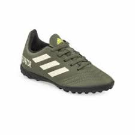

• Originales
PREDATOR 19.4 S FG
Precio habitual Q699.00
Este producto se encuentra en adidas y en ningún otro sitio.
Tallas que ofrecemos
| 28 1 / 2 | 29 | 30 | 30 1 / 2 |
| 31 | 31 1 / 2 | 32 | 38 |
| 40 | 41 | 42 |
Predator es mucho más que un calzado de fútbol. Es la prueba de que los hechos son más convincentes que las palabras. Si no puedes respaldar tu amenaza con un absoluto control, sal de aquí ahora mismo. Pero si estás preparado para dominar el partido hasta el pitazo final, sigue leyendo. El exterior sintético suave de este calzado de fútbol incorpora un talón anatómico para un ajuste de máxima comodidad. El empeine grabado se adhiere al balón y maximiza la precisión de tu juego en cada pase y tiro al arco.